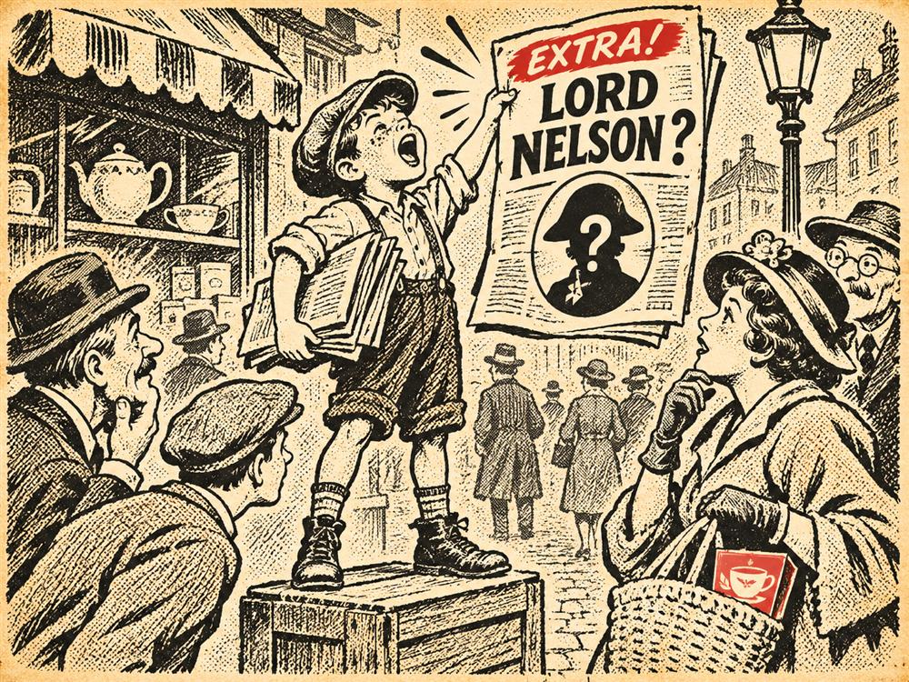
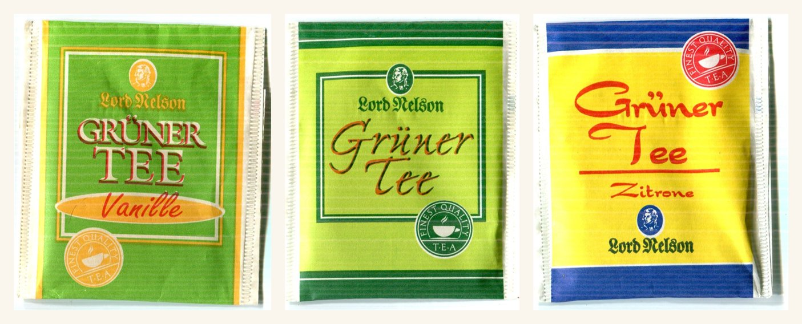
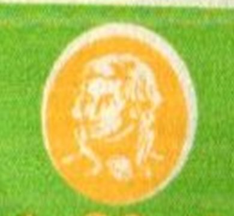
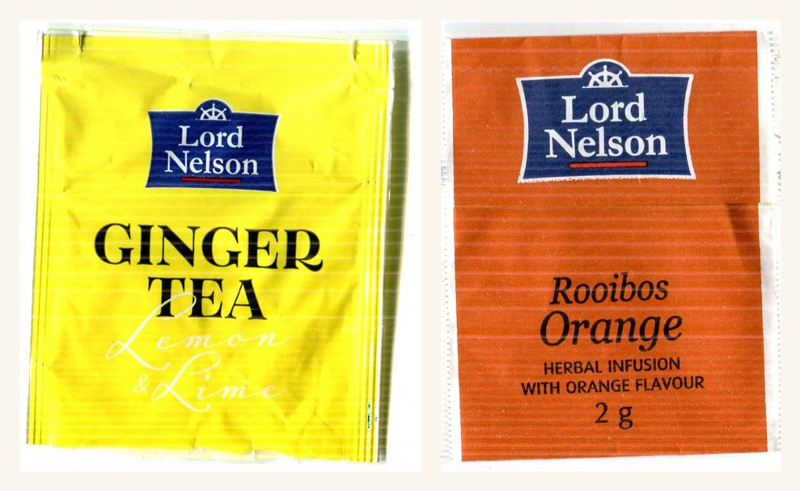
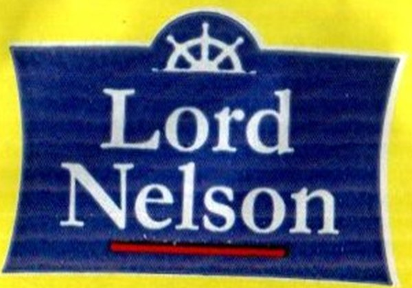
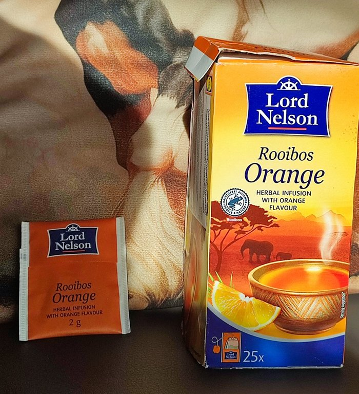
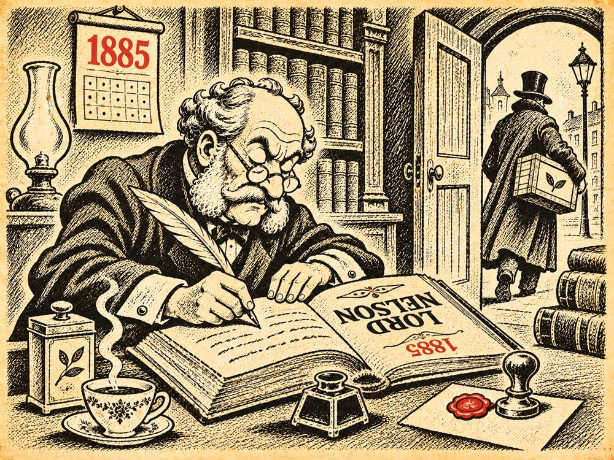
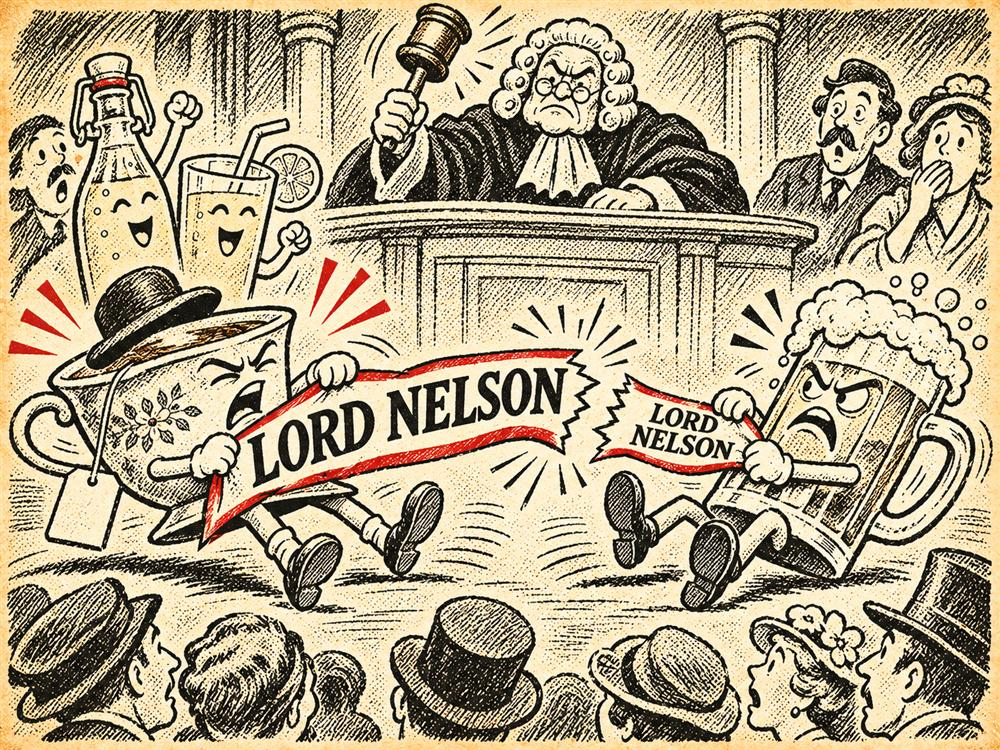

Kto je pán v medailóne?
Čajová detektívka. Na mojich starších vrecúškach Lord Nelson je malý medailón s pánom v profile. Na novších už nie je – namiesto neho je tam lodné kormidlo. Vydal som sa po stopách. Niečo sa vypátrať podarilo, niečo zostáva záhadou.

Stopa prvá: pán v medailóne
V mojej zbierke je päť vrecúšok Lord Nelson. Tri najstaršie sú zelené čaje – obyčajný, s vanilkou a s citrónom. Meno Lord Nelson je na nich napísané ozdobným lomeným písmom, aké poznáme zo starých nemeckých kníh. A nad ním je malý okrúhly medailón: pán s dlhými vlnitými vlasmi, otočený doprava.


Stopa druhá: pán zmizol, prišlo kormidlo
Na dvoch novších vrecúškach – zázvorovom čaji a rooibose s pomarančom – už medailón nie je. Meno je napísané obyčajným tlačeným písmom v modrom rámčeku a nad ním je lodné kormidlo. Pán z medailónu odišiel, ale more zostalo.


Stopa tretia: komu patrí meno
Na vrecúškach výrobca napísaný nie je. Lord Nelson je vlastná značka obchodov Lidl – obchod si čaj objedná u výrobcu a ten ho zabalí pod menom, ktoré patrí obchodu. (Viac o tom píšem v článku o nórskom čaji z Česka.) Podľa nemeckých stránok o tovaroch v obchodoch ho pre Lidl balí napríklad firma Ostfriesische Tee-Gesellschaft.
Pomôžu úrady. Kto chce, aby meno jeho tovaru nesmel používať nikto iný, dá si ho zapísať ako ochrannú známku – nie poštovú, ale „meno pod ochranou“. Zápis je verejný a dá sa v ňom pátrať.
Prvú stopu som našiel v kanadskom registri ochranných známok. Ochranná známka Lord Nelson tam patrí firme Lidl Stiftung & Co. KG z Neckarsulmu a v zázname stojí, že v Nemecku bola zapísaná už 22. novembra 1976 – pre šípkový a ovocný čaj a bylinné čaje: mätový, slezovo-ibištekový, feniklový a harmančekový. Kto ju vtedy dal zapísať a či patrila Lidlu už od začiatku, som zo záznamu nevyčítal.

Stopa štvrtá: meno staré 140 rokov
Rok 1976 však nie je koniec. V britskom registri som našiel ochrannú známku LORD NELSON na čaj, ktorá bola zapísaná už 18. decembra 1885! V marci 1886 ju úrad zverejnil v svojom vestníku, aby sa mohol ozvať každý, kto by s ňou nesúhlasil. Odvtedy ju majitelia vždy znova obnovovali – platí dodnes, najbližšie do roku 2027. A dnes ju vlastní Lidl.
Kto si ju dal zapísať v roku 1885? To je ďalšia záhada. Na internete zverejnená história zápisu mená majiteľov neuvádza. Vidno v nej len to, že meno a adresa majiteľa sa menili v rokoch 1990 a 1991 a že v roku 1997 bola ochranná známka čiastočne prevedená na niekoho iného. Komu, tam napísané nie je – ale sám Lidl uvádza, že čaj Lord Nelson predáva v Európe od roku 1995 a v Británii od roku 1999. Meno prvého majiteľa bude asi len v starom vestníku z roku 1886, ktorý som na internete nenašiel.

Stopa piata: čaj proti pivu
O meno Lord Nelson sa dokonca viedol spor. V roku 2018 si ho chcela v Británii zapísať jedna malá firma – pre pivo, džúsy, minerálky, limonády aj liehoviny. Mala na to pekný dôvod: chcela predávať nápoje pod menom hostinca v grófstve Norfolk, v ktorom vraj kedysi posedával sám admirál Nelson. (V Norfolku sa aj narodil.)
Lidl sa ozval: meno Lord Nelson už má na čaj. Britský úrad potom vážil, či je čaj „podobný“ pivu a limonáde. Rozhodol v júni 2019: pri džúsoch, vodách a limonádach vyhral Lidl – aj čaj sa pije na smäd, aj ľadový čaj stojí v obchode vedľa limonád a zákazník by si mohol myslieť, že limonáda Lord Nelson je od tej istej firmy ako čaj. Pri pive vyhrala firma s hostincom – pivo má alkohol a to je pre ľudí úplne iný tovar. Za trovy konania musela firma Lidlu zaplatiť 1 100 libier.

Pre nás je v rozhodnutí ešte jedna drobnosť: Lidl úradu ukázal svoje krabičky čaju z rokov 2010 až 2017 – a na všetkých už je kormidlo. Pán z medailónu teda z obalov zmizol najneskôr v roku 2010.
Stopa šiesta: zberateľský katalóg
Zberatelia z celého sveta zapisujú svoje vrecúška do veľkého katalógu LastDodo. Pri značke Lord Nelson majú celú sériu s názvom „Image in oval“ – obrázok v ovále. V novembri 2026 v nej bolo 89 rôznych vrecúšok. A sú medzi nimi aj moje tri zelené čaje!
Našiel som tam aj vrecúško, ktoré v mojej zbierke nie je: modrý bylinný čaj 6-Kräuter Tee (čaj zo šiestich bylín) s tým istým pánom v ovále. Má ho 43 zberateľov a predáva sa za pár centov. Pri ňom je poznámka, ktorú poznám aj z mojich vrecúšok: predná a zadná strana sú rovnaké. Rok tam však uvedený nie je – a meno pána z medailónu tiež nie. Ani zberatelia teda nevedia viac ako ja. 🙂
Je to admirál?
Pri mene Lord Nelson si väčšina ľudí spomenie na britského admirála Horatia Nelsona (1758 – 1805). Za víťazstvá na mori dostal šľachtický titul, preto „Lord“. Zahynul 21. októbra 1805 v bitke pri Trafalgare, ktorú jeho loďstvo vyhralo.
Meno aj lodné kormidlo na novších vrecúškach by k admirálovi sedeli. Lenže výrobca to nikde nepíše a o tom, že by mal admirál niečo spoločné s čajom, som nenašiel ani zmienku. Možno meno vybrali len preto, že znie anglicky, vznešene a trochu námornícky – veď čaj sa do Európy voľakedy dovážal loďami. Ale to je už len môj odhad, nie dôkaz.
A pán v medailóne? Má dlhé vlnité vlasy, aké sa nosili v 18. storočí. Posúďte sami. 🙂
Čo ešte nevieme
- Kto je pán v medailóne – admirál, alebo niekto iný?
- Kto si v roku 1885 dal v Británii zapísať meno Lord Nelson na čaj – a ako sa po vyše sto rokoch dostalo k Lidlu?
- Kto dal v roku 1976 zapísať ochrannú známku Lord Nelson v Nemecku?
- Aké staré sú vrecúška s medailónom? Vieme len, že najneskôr od roku 2010 je na obaloch kormidlo.
Ak máte doma starú krabičku Lord Nelson s pánom v medailóne, budem rád, keď mi o nej napíšete do Knihy návštev. Na krabičke býva viac textu ako na vrecúšku – možno práve tam je odpoveď.
Zdroje
- Ochranná známka LORD NELSON č. 1340295 – Kanadský úrad duševného vlastníctva (anglicky) – zápis v Nemecku 22. 11. 1976
- Ochranná známka LORD NELSON č. 49736E – Britský úrad duševného vlastníctva (anglicky) – zápis 18. 12. 1885 a história zápisu
- Rozhodnutie O/336/19 z 13. 6. 2019 – Britský úrad duševného vlastníctva (anglicky, PDF) – spor o meno Lord Nelson
- Lord Nelson – séria Image in oval – LastDodo (anglicky)
- Lord Nelson 6-Kräuter Tee – LastDodo (anglicky)
- Nelson, Moate & Co. – noviny z roku 1881, Papers Past (anglicky)
- The Cyclopedia of New Zealand – Nelson, Moate & Co. (anglicky)
- Horatio Nelson – Wikipédia
Text pripravil Claude, spolutvorca stránky, podľa nápadu autora zbierky. Prvé stopy pomohla nájsť iná umelá inteligencia; ako fakt tu píšeme len to, čo sme si overili. Skeny a fotky sú zo zbierky, kreslené obrázky v štýle starých novín vytvorila iná umelá inteligencia.